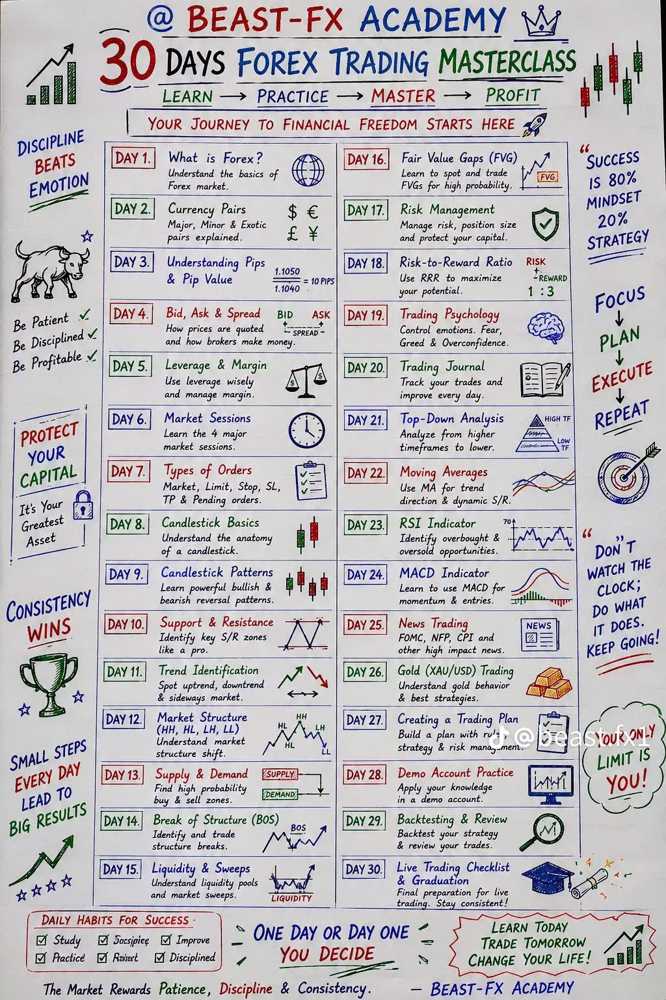
Quá trình kiểm soát số tiền bạn rủi ro trên mỗi lệnh để một lệnh xấu không quét sạch tài khoản.
Không bao giờ rủi ro quá 1-2% tài khoản trên một lệnh duy nhất. Giúp bạn sống sót qua các chuỗi thua.
Nhắm vào lệnh có ít nhất 1:2 hoặc 1:3. Ví dụ: Risk = $10 → Target Profit = $20-$30.
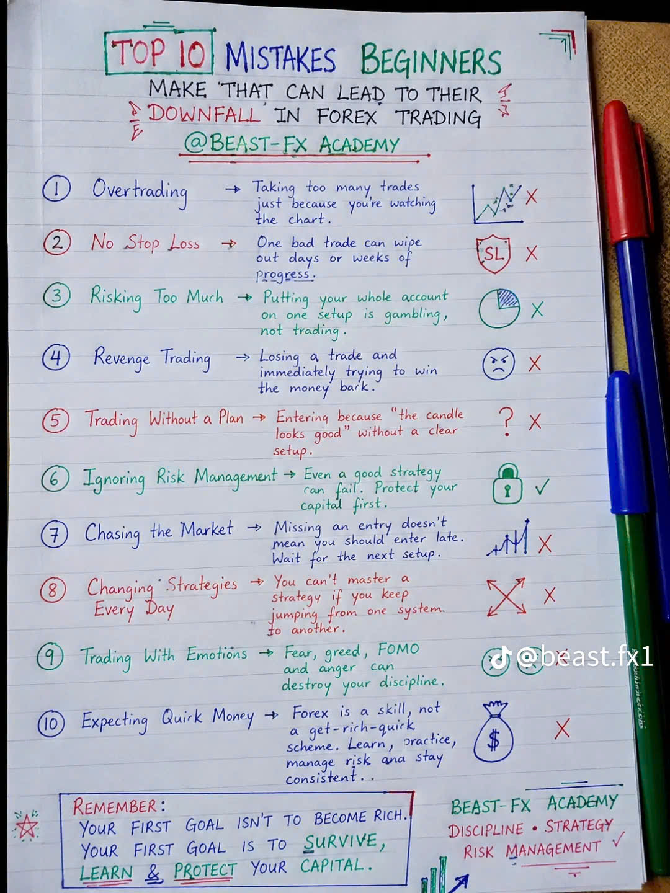
Cách cảm xúc và tư duy ảnh hưởng đến quyết định giao dịch. Ngay cả chiến lược tốt nhất cũng có thể thất bại nếu cảm xúc lấn át.
Sợ hãi có thể khiến bạn đóng lệnh quá sớm, tránh cơ hội giao dịch tốt. Giải pháp: Tin tưởng plan giao dịch.
Tham lam có thể khiến bạn overtrade, rủi ro quá nhiều, giữ lệnh thắng quá lâu. Giải pháp: Tuân theo quy tắc TP và rủi ro.
Sau khi thua lệnh, nhiều trader ngay lập tức vào lệnh khác để thu hồi lỗ. Thường dẫn đến lỗ lớn hơn. Giải pháp: Nghỉ ngơi, đánh giá lệnh, chờ setup chất lượng.
Trader chuyên nghiệp:
Ghi lại mọi lệnh: Entry, Exit, Lý do vào lệnh, Lợi nhuận/Lỗ, Bài học rút ra.
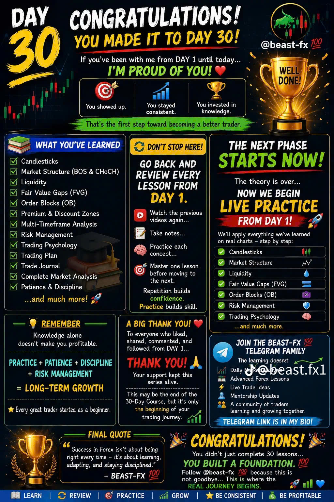
Ghi chép mọi lệnh bạn thực hiện. Giúp xác định điều gì hiệu quả, điều gì không, và cách cải thiện.
Cuối mỗi tuần, hỏi bản thân:
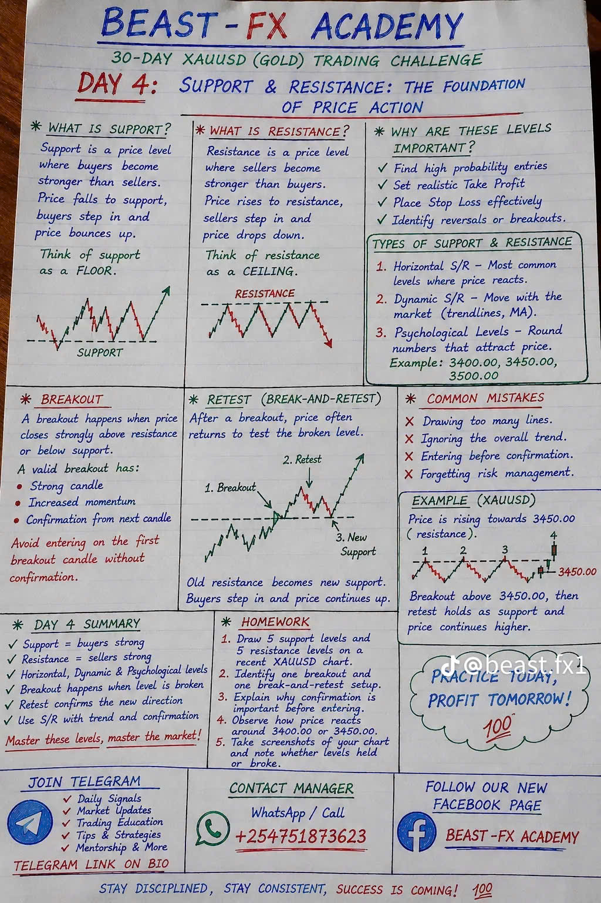
Bộ quy tắc bằng văn bản cho bạn biết khi nào vào lệnh, khi nào thoát, và khi KHÔNG nên giao dịch.
XAU/USD (Vàng), Các cặp Forex chính.
Sai lầm: Giao dịch không có plan. Vào lệnh ngẫu nhiên. Bỏ qua quy tắc. Để cảm xúc ra quyết định.
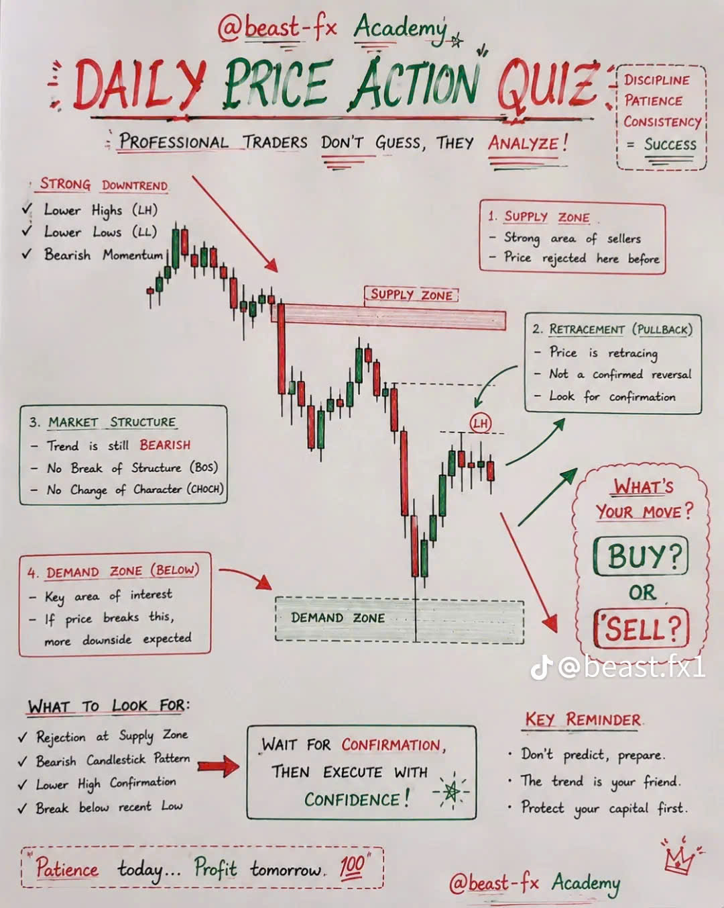
Mở biểu đồ D1/4H. Tăng? Giảm? Đi ngang?
Vẽ: Support, Resistance, Previous High/Low, Liquidity Zones.
Tìm: BOS, CHoCH. Giúp xác nhận xu hướng.
Tìm: Order Blocks, Fair Value Gaps, Premium & Discount Zones.
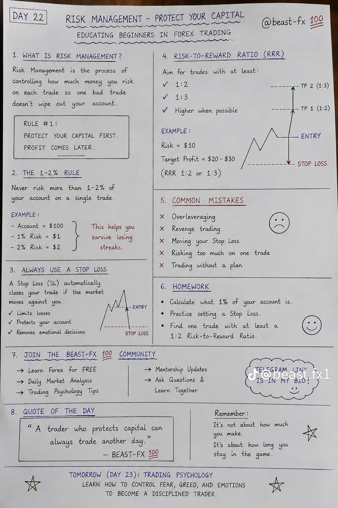
Vào lệnh ngẫu nhiên mà không biết chiến lược. Giải pháp: Luôn có plan và tuân theo.
Rủi ro một phần lớn tài khoản. Giải pháp: Rủi ro chỉ 1-2% mỗi lệnh.
Không dùng SL và hy vọng lệnh sẽ quay đầu. Giải pháp: Luôn dùng SL.
Vào lệnh không chờ xác nhận. Giải pháp: Chờ xác nhận như mẫu nến, BOS, CHoCH, hoặc rejection.
Lệnh ngược xu hướng HTF. Giải pháp: Luôn kiểm tra D1/4H trước.
Quá nhiều lệnh. Giải pháp: Kiên nhẫn, chỉ vào setup chất lượng cao.
Cố thu hồi lỗ nhanh. Giải pháp: Bình tĩnh, chờ setup tốt tiếp theo.
Tham lam, giữ lệnh quá lâu. Giải pháp: Chốt lời tại target.
Để sợ hãi, tham lam kiểm soát. Giải pháp: Bám plan, giao dịch kỷ luật.
Không học từ quá khứ. Giải pháp: Đánh giá lệnh, học từ sai lầm.
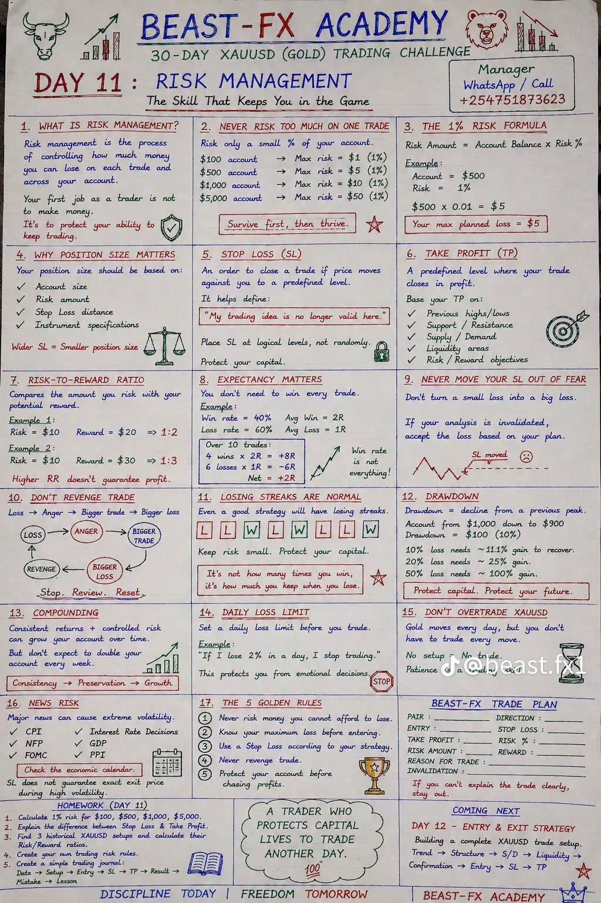
Nhiều trader thua KHÔNG PHẢI vì chiến lược xấu — họ thua vì KHÔNG THỂ CHỜ.
Tuân theo plan giao dịch ngay cả khi cảm xúc nói bạn làm điều khác.
Trader chuyên nghiệp:
Trước khi giao dịch: Kiểm tra tin tức → Phân tích HTF → Đánh dấu levels → Chờ xác nhận → Quản lý rủi ro → Ghi nhật ký.
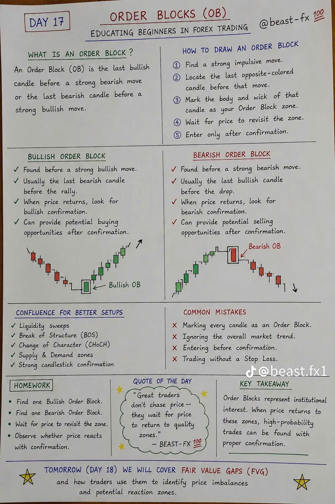
Quay lại và đánh giá MỖI BÀI HỌC từ DAY 1. Xem lại, ghi chú, thực hành mỗi khái niệm. Thạo một bài trước khi chuyển sang bài tiếp theo.
Kiến thức một mình KHÔNG làm bạn có lợi nhuận.
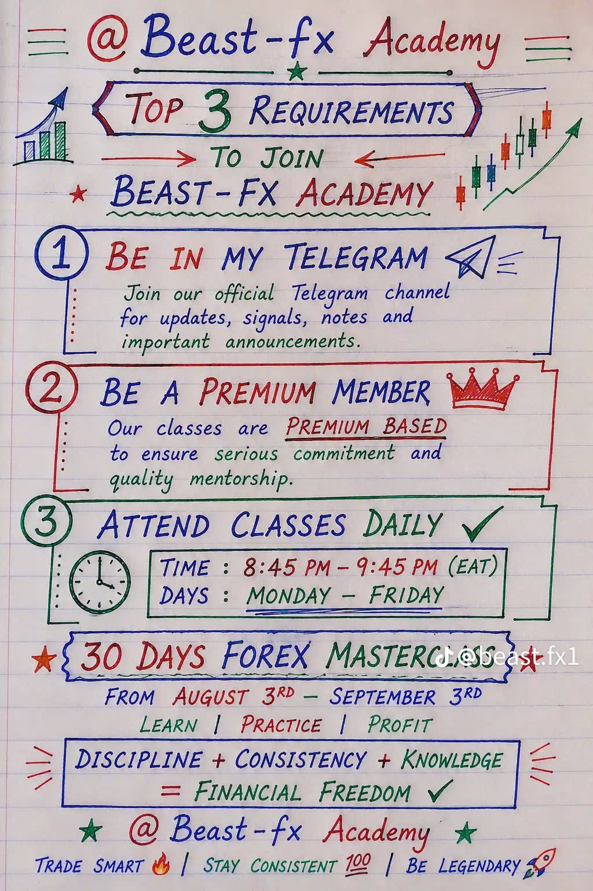
Thị trường đi ngang trước khi chuyển động lớn. Equal highs & lows, bi động thấp, thanh khoản đang xây dựng.
Xác nhận trend tiếp tục. Bullish BOS: Phá & đóng cửa trên swing high. Bearish BOS: Phá & đóng cửa dưới swing low.
Định chế săn thanh khoản trước khi chuyển động thật. Bullish Sweep: Quét dưới SSL rồi đảo chiều lên. Bearish Sweep: Quét trên BSL rồi đảo chiều xuống.
Vào lệnh dựa trên xác nhận, không dự đoán. Consolidation → BOS → Sweep → Confirmation → Risk:Reward 1:2+
Nến ngược màu cuối cùng trước chuyển động mạnh. Giá thường quay lại OB trước khi tiếp tục.
Mất cân bằng do mua/bán mạnh. Giá quay lại lấp gap. Setup tốt nhất: OB + FVG đồng thuận!
Trên 50% = Premium (Bán). Dưới 50% = Discount (Mua). Mua thấp, bán cao.
Uptrend: HH + HL. Downtrend: LH + LL. Range: Đi ngang.
4H (Trend) → 1H (Structure) → 15M (Setup) → 5M-1M (Entry)
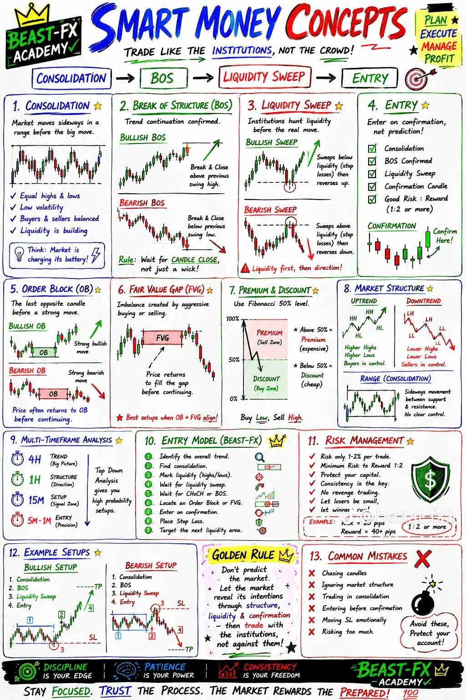
Nếu trader kỳ vọng tin mạnh, giá có thể tăng TRƯỚC khi công bố. Khi tin ra, giá có thể GIẢM vì chốt lời.
Giá có thể spike một hướng, kích hoạt stop loss, thu hút breakout traders, sau đó ĐẢO CHIỀU.
Định chế sử dụng biến động để đổ lệnh lớn.
Thị trường phản ứng với sai lệch giữa thực tế và dự báo. Deviation lớn = Phản ứng lớn!
Cùng tin nhưng phản ứng đối lập tùy: Xu hướng, Kỳ vọng NH, Vị thế thị trường, Tin trước.
Quanh tin lớn, spread mở rộng, lệnh có thể fill ở giá khác.
Tránh vào lệnh trong vài phút đầu. Giao dịch khi thị trường tiết lộ hướng thật.
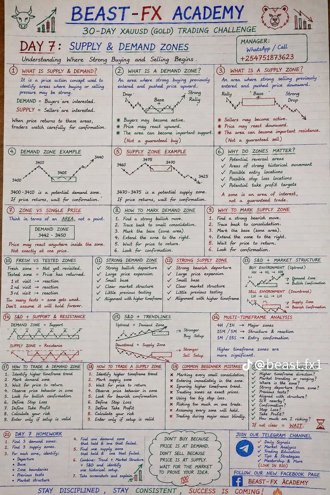
Thanh khoản khổng lồ = Spread chặt hơn, chuyển động giá mượt hơn, phân tích kỹ thuật sạch hơn.
Rất nhạy cảm với lãi suất và tâm lý rủi ro toàn cầu. Khi bất ổn, trader theo dõi chặt.
Nổi tiếng với biến động bùng nổ. Lợi nhuận lớn — nhưng rủi ro lớn hơn.
Bị ảnh hưởng mạnh bởi vàng, quặng sắt, và nền kinh tế Trung Quốc.
Thụy Sĩ = nơi trú ẩn tài chính. Tiền chảy vào CHF khi thị trường sợ hãi.
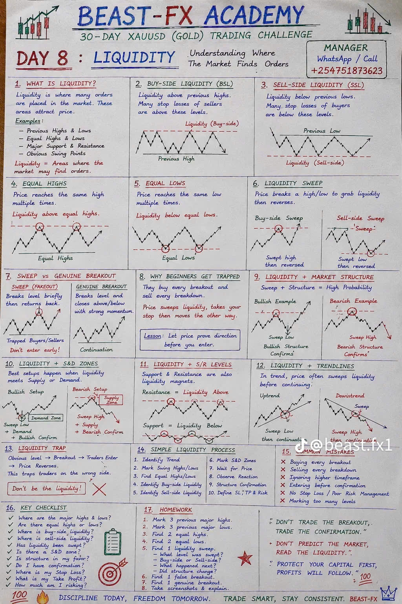
Vào quá nhiều lệnh chỉ vì đang xem biểu đồ.
Một lệnh xấu có thể quét sạch nhiều ngày hoặc nhiều tuần tiến bộ.
Đặt toàn bộ tài khoản vào một setup là cờ bạc, không phải giao dịch.
Thua một lệnh và ngay lập tức cố thắng lại tiền.
Vào lệnh vì "nến trông đẹp" mà không có setup rõ ràng.
Ngay cả chiến lược tốt cũng có thể thất bại. Bảo vệ vốn trước.
Bỏ lỡ entry không có nghĩa bạn nên vào muộn. Chờ setup tiếp theo.
Bạn không thể thạo chiến lược nếu nhảy từ hệ thống này sang hệ thống khác.
Sợ hãi, tham lam, FOMO và giận dữ phá hủy kỷ luật.
Forex là kỹ năng, không phải schemes làm giàu nhanh.